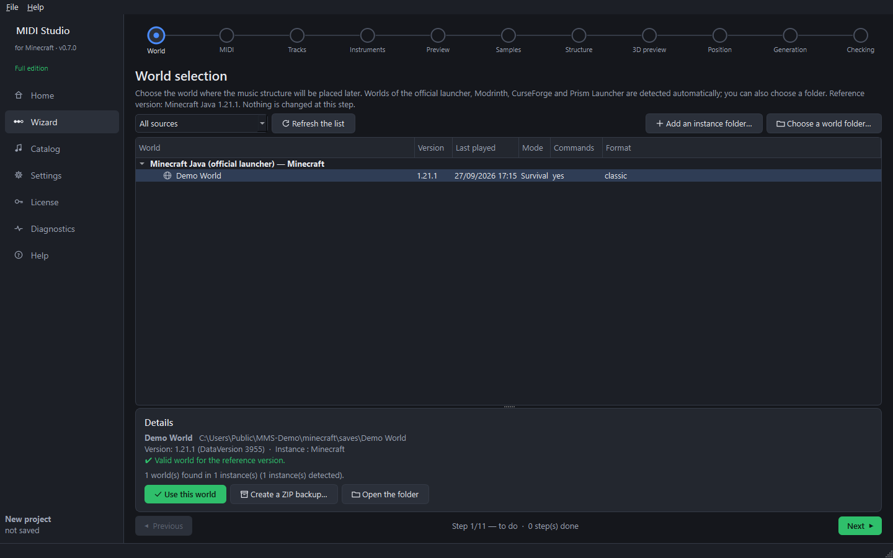

Step 3 — Choose a world (wizard step 1)
Goal: pick the Minecraft world where the music structure will be placed.
- On the Home page, click New project. The Wizard opens on step 1, World.
- The list shows every world found (official launcher, Modrinth, CurseForge, Prism). A world you create while the program is open appears by itself; Refresh the list forces a new search.
- Click a world: its version, game mode, commands and folder are shown below.
- Click Use this world.

Good to know
- Commands must be allowed in the world (the music is controlled with
/function). If they are not: in game, Open to LAN → Allow commands, or use a server. - Close the world in Minecraft before installing the music (step 10). The software checks it.
- Create a ZIP backup… copies the whole world into your backup folder without changing it. A backup is also offered automatically before any installation.
- Nothing is written into the world at this step.
Next guide: import your MIDI file.